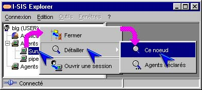
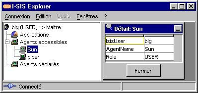
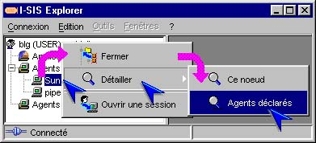
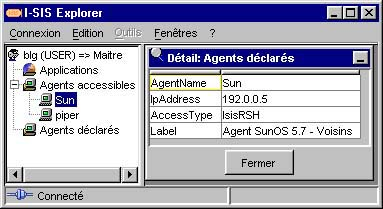
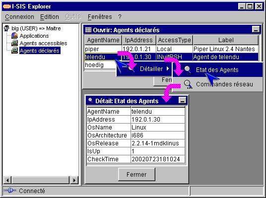

I-SIS Explorer

Guide d'utilisation
|
|
I-SIS Explorer |
|
|
Guide d'utilisation |
||
Le I-SIS Portail et les I-SIS Agents permettent d'accéder aux modes d'emploi d'exploitation qui présentent les données et les paramètres des services organisés grâce aux table I-TOOLS. La navigation I-SIS permet de visualiser les données de ces tables et d'agir sur celles-ci grâce aux menus contextuels.
Dans ce chapitre, nous abordons les fonctionnalités de I-SIS liées à la visualisation des données des tables I-TOOLS.
Dans l'arborescence, un nœud ligne représente une ligne de table. Avec "Ce nœud" du menu "Détailler ", tout utilisateur peut visualiser ses données sur deux colonnes : le nom des champs de l'objet dans la colonne de gauche, et leur valeur dans la colonne de droite.
Pointez un nœud ligne, et cliquez avec le bouton droit de la souris pour afficher le menu contextuel,

Pointez "Détailler " () pour en afficher le sous-menu,
Cliquez "Ce nœud" () pour en visualiser les données,
Les données du nœud sélectionné sont affichées dans une sous-fenêtre.

La table du nœud ligne considéré peut avoir des clés étrangères sur d'autres tables. Ce nœud est alors lié à des données provenant de ces autres tables. Tout utilisateur peut visualiser chacune de ces données liées en cliquant l'élément correspondant, dans le menu "Détailler ":
Pointez le même nœud ligne que précédemment, et cliquez avec le bouton droit pour afficher le menu contextuel,
Pointez "Détailler " () pour en afficher le sous-menu,
Sous "Ce nœud", cliquez l'élément correspondant à la donnée liée à visualiser (),

Les données liées au nœud ligne sélectionné sont affichées dans une sous-fenêtre.

Le menu "Détailler " est également accessible sur chaque ligne d'une table, affichée avec sa clé complète, sous forme de tableau dans une sous-fenêtre de I-SIS Explorer. Ce menu propose les données liées à la table ouverte. Ces données sont ainsi visualisées de la même manière que depuis un nœud ligne de l'arbre d'exploration :
Sur une table ouverte (cf. «Ouvrir un nœud table»), pointez une ligne,
Cliquez avec le bouton droit pour afficher le menu contextuel,
Pointez "Détailler " () pour afficher le sous-menu,
Cliquez une donnée liée à visualiser (),
La donnée liée à la ligne sélectionnée est affichée dans une sous-fenêtre.

Copyright © 2003 BV Associates. Tous droits réservés.